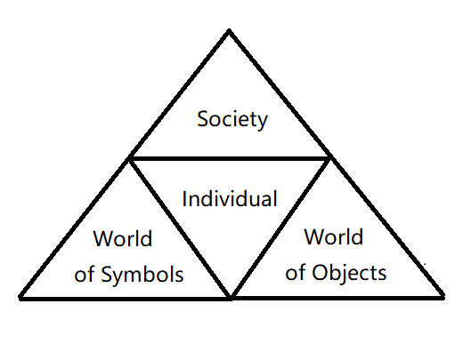

Intercultural communication skills
Q: What
abilitiesdo employers look for from employees about intercultural skills?
A: Understand people from different cultural backgrounds, build trust, demonstrate respect, and speak other languages.
What do employers understand by intercultural skills ?
Descriptor
- contexts and viewpoints
- respect
- settings
- differences
- languages
- ideas and ways of thinking
Why do employers think that intercultural skills are important ?
Benefits:
- earnings
- new clients
- diverse teams
- brand and reputation
Risks:
- loss of clients
- damage to reputation
- team conflict
How do employers evaluate job candidates for intercultural skills ?
- Strong communication (interview and selection)
- Foreign language
- Cultural sensitivity (interview)
- Studying overseas
- Working overseas
The Ritual of Conversation across Cultures
Key Terms Preview
&&&&&
- absent presence
- conversational initiation
- phatic communion
- conversational preview
- conversational talking points
- conversational feedback
- conversational closing
Introduction
Q: What is absent presence ?
A: A behavior that someone can behere, but also bethere, inanother world,separatefrom his or hersurroundings, includingpeople.
Q: What should a skilled intercultural communicator know ?
A: When tospeak, when to remainsilent, and to always stop speaking before the listener stopslistening.
Q: What is an important first step when engaging in a conversation ?
A: Being open to others and their differences.
Q: Why discuss the ritual of conversation ?
A: Because it is one of the main ways we interact across cultures and it is ripe for misunderstandings.
Q: What dose the ritual of conversation will allow you to do when examining it ?
A: Consider its components, predict the next turn, anticipate an opening or closing, and beconme a better conversationalist.
Initiation (1st stage)
Q: What does conversational initiation require ?
A: It requires you to be open to interaction.
Q: What does ‘small talk phatic communion’ reinforced ?
A: A idea that there is a degree of ritual across cultures on how we initiate, engage, and conclude conversations.
Preview (2nd stage)
Q: What is
conversational preview?
A: Anindication, verbal or nonverbal, ofwhat the conversation is about, both in terms ofcontentand in terms of therelationship.
Talking Points (3rd stage)
Q: What is
talking points?
A: It represents theessential meanings sharedin the interaction.
Feedback (4th stage)
Q: What is
conversational feedback?
A: It allows the conversational partners toclarify, restate, or discussthe points of the conversation to arrivea sense of mutual understanding.
Closing (5th stage)
Q: What is
conversational closing?
A: It is averbaland/ornonverbalexchange where the conversational partners agree toendthe interaction.
Q: What are the factors that influence what you say and hou you close a conversation ?
A: Include yourrelationshipand level offamiliaritywith the person or group. But it is often best tosignalyour attention to close the conversation clearly to avoid misunderstanding.
Course Notes
Q:
Four elementsof intercultural communication.(C-VPN)
A:
- Perception
- Verbal Process
- Nonverbal Process
- Contextual Elements
Q:
Whydo we need to learn intercultural communication ?
A:
- self-awareness
- demographic changes
- ethnocentrism
- creative problem solving
- workplace economic globalization
- global and interpersonal peace respect
Q: What is
ethnocentrism?
A: Tendency to think that our culture is more superior to other.
Q: What is
perception?
A:
- beliefs
- values
- attitudes
- world views
- social organization
Q: What is
verbal process?
A: The ways in which cultures employ symbols to portray things and experiences.
Q: What is
nonverbal process?
A: Shared thoughts and feelings of bodily behavior, time and space.
Q: What is
contextual elements?
A:
- business
- education and health care
- tourism
- personal relationships
